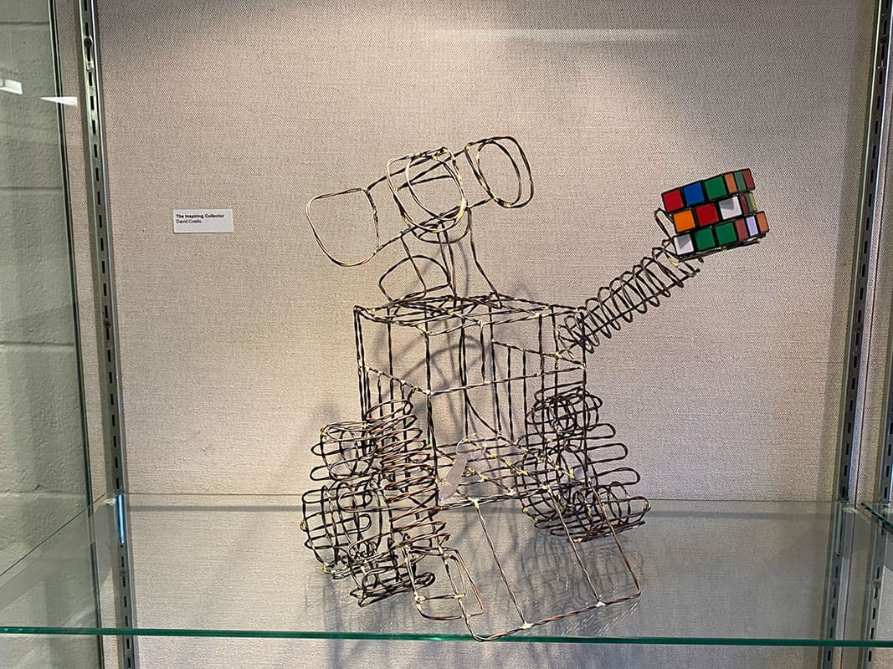
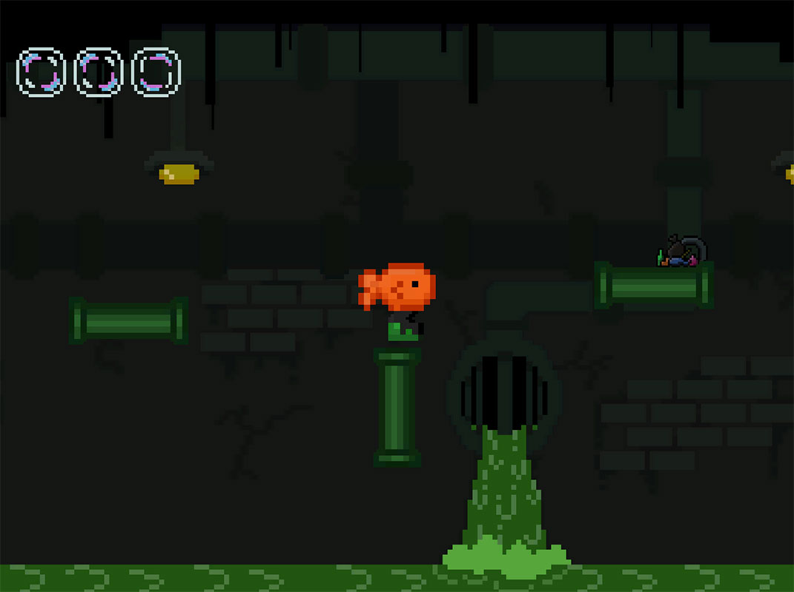

^_- About Me
Hello! My name is David Coello, a Mexican-American artist who works with a variety of mediums to express my creativity and to share my enjoyment of the process of making. I mainly create digital drawings as a way to spark ideas and concepts. If I want to expand on these ideas, I incorporate them into either a physical or digital medium. Physical mediums include sculpting; while Digital mediums involve the use of 3D modeling and coding. I tend to work more with Digital Mediums rather than Physical, but I promise that each work was made through time, effort, and care. I love seeing how my art evolves over time through experimenting with new and different mediums, while also incorporating old skills to create new works of art.
My Work


The Inspiring Collector
I created a sculpture of the character Wall-E by brazing metal rods together.



Free Feesh
A simple platformer game I worked on about a fish who's goal is to reach the ocean.
Contact Me
Email: davidecoello2@gmail.com